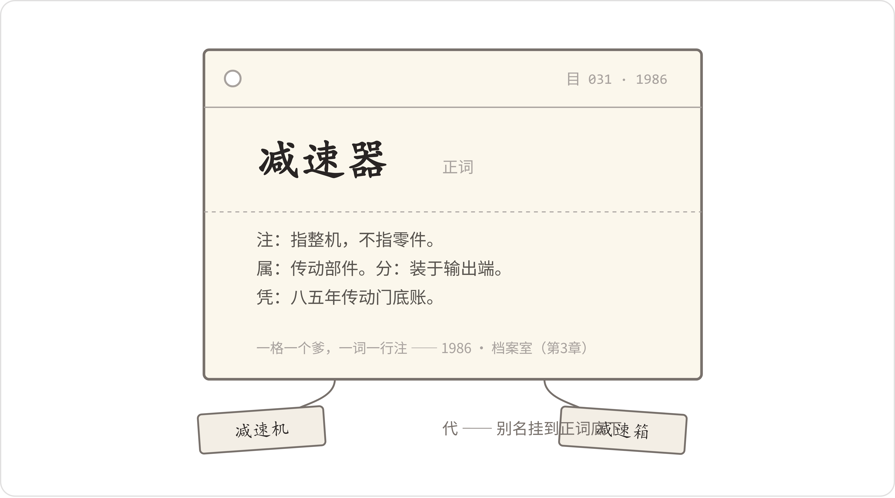

The Old Man in the Archive
2026年4月27日，星期一。
早上八点四十，陈临和郑敏一前一后下行政楼的楼梯。楼梯走到头，再往下半层，就是负一层。拐角的感应灯坏了半年，物业换了个新的，人走到跟前，啪一声亮，照出墙皮上一大片返潮的印子。
越往下走，味道越重。纸味，潮气，还有一点樟脑。
走廊尽头一扇铁门，门上贴着一张打印纸：档案室，阅档请登记。纸的四个角用透明胶带补过，补了两层。
门虚掩着。门推开之后，一股更浓的味道跑了出来，呛得人难受。屋子比陈临想的大，两排铁柜从门口一直排到墙根，柜门上贴着牛皮纸标签，一张挨一张，字有新有旧。柜子顶上码着纸箱，箱皮上用记号笔写着年份。屋子最里头，一张长案，案上方吊着两根日光灯管，亮着。灯下坐着个老头。
叶栖梧，六十五岁，设计院情报所退下来的，返聘到青山管档案，管了四年。他穿一件灰夹克，外套袖子上套着蓝布套袖，老花镜推在脑门上。指甲剪得很短，右手食指侧面沾着一点浆糊。
他手上有活。长案上铺着一张老图纸，纸黄了，脆了，右下角碎掉一小块。他左手拿镊子，夹着一条窄窄的补纸往裂缝上对；右手捏一支排刷，蘸了稀浆糊，往纸上一段一段地抹。抹一下，停一下，再抹一下。
郑敏叫他："叶工。"
"嗯。"他没抬头，"等我把这条缝走完。"
两人就站着等。门边小桌上摊着登记簿，郑敏熟门熟路，抽过笔来写了名字、部门、时间，又把笔递给陈临。陈临写的时候扫了一眼，簿子上这个月的记录，加上他们，一共六行。
叶老把手底下那条补纸对齐、压实，拿一方镇尺压住，才直起腰，把老花镜从脑门上扒下来，挂在衬衫第二颗扣子上。
"郑部长。"他先看郑敏，再看陈临。
"这是我们数字办的陈主任，想跟您讨教讨教。"郑敏说。
陈临伸出手。叶老看了看自己的右手，先从案头扯了条毛巾擦了两下，才伸过来。手很干，握得有劲，松得也快。
"坐。"他指指案边两张方凳，"屋里没茶。我一个人，你们自带水没有？"
郑敏说带了。陈临落座前，看了一眼长案上那张图。图纸右下角有标题栏，描图员签名栏里一个名字，日期一栏写着：1973年8月。
"咱们厂头一代产品的底图。"叶老顺着他的目光说，"那会儿出图，设计画完铅笔图，描图室的人铺上硫酸纸，一根线一根线描出来，这张就是底图，往后蓝图全从它身上晒。纸搁了五十多年，酸了，脆了，一碰掉渣。我给它背面托一层衬纸，还能再放五十年。"
"没人安排您弄这个吧？"郑敏说。
"没人安排。"叶老说，"可矿山上还有跑这批老家伙的，前年就有客户来求过图。这批图再搁十年，就真没了。我一天揭一张，揭多少算多少。"
他说完这话，两人都没接。郑敏把来意说了：上回跟叶工约的，今天带陈主任来看看；末了补一句："再调个东西。2023年的工艺更改通知单，华信轴承那份，存根。"
叶老听完，没马上动。他站在案子跟前，眼睛望着那两排铁柜，想了想，自言自语似地说了一句："华信，洛阳那家。前年采购口和质量口移交下来的，归在质量档。"
他起身往里走。第三排柜子，从上往下数第二个抽屉，拉开。抽屉里一排牛皮纸袋，袋口朝上，袋侧贴着标签，圆珠笔写的：年份加移交部门。他的手指头在袋子上一路点过去，点到一只袋子，停住，抽出来。袋口的白棉线绕了三道，他一圈一圈解开，里面一沓存根，按件号排着。他翻到第三份，抽出来，走回长案，放在郑敏面前。
陈临看了下手机。八点五十开的口，现在是八点五十五。
《工艺更改通知单》，存根联。编号GG-23-002，签发日期2023年1月。变更内容一栏写着：热处理工艺线变更，渗碳工序参数调整。再往下，确认意见栏里，有字。采购经办人签了名，落了日期，后头还跟了一行小字：已收悉，测试报告后补。
郑敏凑过去看，掏出手机就拍。
"闪光灯关了。"叶老说，"纸怕光。"
郑敏应了一声，关了，又凑近拍确认栏那行小字，拍了两张。三月份她来调过一回：先在楼上系统里翻扫描件，翻了半个多小时，签字糊成一团，末了还是下的档案室——五分钟。这笔账她跟数字办念叨过一回，今天陈临是亲眼看着走了一遍。
"叶工，"陈临说，"您这个，比我们系统好使。"
叶老把棉线重新绕回纸袋上，手停了。
"这话郑部长上回也说过。"他把纸袋放回抽屉，推上，"我不爱听这个。你们系统查不着东西，是你们有病；我这几下，是笨功夫，笨功夫有什么可夸的。"
郑敏在旁边低声说："提醒过你了。"
叶老回到长案边，没坐下，看着陈临："再说了，我这脑子里没那么些东西。我这屋，一个月来不了十个人。你们楼上，一天要查多少事？"
这话陈临没法接。他索性把来意摊开了讲。
陈临讲得慢，拣要紧的说。ERP、MES、质量系统，加上文档库，四个口子，各记各的账。郑敏查十一台减速机的来龙去脉，一个口子一个口子跑，抄在本子上对，对不上的打电话问人。三个名字其实是同一家供应商，机器合不成一家。文档库里两万三千份文件，作废的旧版的混在一起，智能问答把作废的规范发给客户，系统下线了。经营会上，财务报387家客户，销售报462家，董事长问全场到底有多少家客户，没人答得上来。
"后来我们试了三条路。"陈临说，"写查询的、买平台的、上大模型的，都试了。各有各的卡法。大模型那个——"他顿了顿，"它认字，不认事。"
"大模型，这个我不懂，没摸过。"叶老说得干脆。他把手里的镊子搁进一个搪瓷盘里，"可你们说的这个毛病，我听着耳熟。"
他听陈临讲的时候，一直没插话，手里也没停——把长案上那张老图纸往里推了推，腾出半张案面。这会儿他从案子底下拖出来一个铁皮盒，锈了边，原来是装饼干的。盒盖打开，一摞卡片，橡皮筋捆着；卡片底下压着一本小册子，封皮发黑，油印的，书脊上四个字：主题词表。
"我八三年大学毕业，分到设计院情报所。"他说，"我们那个所，管全院的资料——图纸、底图、标准、期刊、外文资料，几十万份。东西一多，头一个毛病就出来了。"
他抽出一张卡片，推到陈临面前。
"设计员来查资料，库里明明有，他说没有。为什么？他叫'减速机'，我们卡片上写的是'减速器'。他按减速机那一格翻，翻不着，扭头就走，回去跟室里讲：资料室没这本书。"叶老用指头点了点案面，"东西好好地躺在库里，死在词上。"
那是一张白卡纸，巴掌大，边角黄了。最上一行钢笔字，横平竖直：
郑敏凑过来看，轻声念："代、属、分、参。"
"对。一个词定了，就得把它全家的名分都写上。"叶老说。
他一项一项讲，讲得慢，讲一段，停一停。
"'代'，是它顶下来的名。减速机、减速箱、齿轮箱，一个东西各地方各厂叫法不一样。五几年苏联的资料进来，一套叫法；七几年日本设备进来，又一套；三线厂并过来的图纸，自己还有一套。翻译各行其是。词表把这些名全挂在一个正式词底下——谁来查，不管从哪个名进来，最后都落到这一个词上。"
他又从盒里抽出一张卡片，只有一行字：减速机——Y 用：减速器。
"'减速机'不算正式词。单独给它一张卡，就这一行，'用减速器'——把人引过去。查的人自己都不知道自己被引了一道。"
"那要是有个名，谁都没登记过呢？"郑敏问。
"那就漏。"叶老说，"所以才要人守着。词表每年开一回会，添新词，并老词。添什么词，看这一年来的人都拿什么词来查、没查着。'数控机床'进词表那年，我记得清楚，好几个所联合打报告。词是吵出来的，不是坐在办公室里想出来的。"
陈临指着卡片下半截。那里还有几行小字，是资料的条目：编号、题名、来源、日期，一条占一行。
"这是挂在'减速器'底下的资料。"叶老说，"一份资料进所，先登记，我们叫著录——编号、题名、哪来的、哪天到的，写清楚。然后标引：给它定词。定几个？两三个，多了就乱。定了词，抄卡。一抄三套：一套按类排，一套按词排，一套按图号排。三套卡，三个头，查的人从哪头进，都查得着同一份东西。"
他把那本油印小册子拿过来，翻开。纸薄得透光，油墨深一块浅一块。
"国家的《汉语主题词表》，七五年开始编，八〇年出齐，三卷十个分册，收了十万多条词。部里后来编了行业的。我们院这本，是拿国家的、部里的删下来的，留院里用得着的，油印了几十本，各所发一本。"他翻到某一页，页边全是铅笔批注，有添有划，"我师父批的。这本是我退休的时候，从处理掉的旧书里捡回来的。"
郑敏问："几万张卡，错过没有？"
"错过。"叶老不遮这个，"卡片插错一格，这份资料就等于没进过库。我见过查一份标准，查了三天，最后发现卡片斜着别在'减速机'和'减速器'当中，两不沾。所以有校卡——老标引员校新人的，每月对一回账。规矩就是从这种事上一条一条攒出来的。攒了十几年，钉成一本册子，挂在所里墙上。新来的大学生，头一年不许独立标引：先抄卡，抄满一抽屉；再校卡，校满一抽屉，才准自己定词。"
他讲起自己入所头三年的事。八六年，所里进了一套西德磨机的随机资料，两大箱，图纸带说明书，他去标引。主标"行星传动"。他师父——当时的所长，姓贺——把卡打回来。理由：来调这套资料的，是给磨机选减速机的人，人家从"减速器"进来，你得让他找得着。改。过两个月，又来一份讲行星传动啮合原理的文章，他学乖了，标了"减速器"，又被打回来——那是讲原理的，归传动理论，挂在减速器底下，选型的人翻了白翻。
"到底怎么划线？所里开会吵。吵了小半年，吵出一条细则：讲整机、讲选型、讲安装的，归产品类；讲啮合原理、讲强度计算的，归理论类。这条细则落地，我经手那张卡，前后改了八遍。"他伸出手指比了个八，"第八遍抄完，贺所长拿过去看了看，就说了三个字：入门了。"
他停了停，把卡片摞齐。
"我师父有句话，我记到现在——词表不是编出来的，是吵出来的。你们今天争一份文件该归哪，我们那时候天天吵的就是这个。吵出来，写成字，后来的人就不用再吵。"
日光灯管轻轻响了一声。郑敏把那张词卡拿起来，对着灯看，翻过来，背面是空的，只有右下角一个铅笔写的编号。
"卡片是坐在屋里等人来。"叶老说，"还有一样，是送出去。每月一期，新到的资料做成目录，刻蜡纸，油印，发给各设计室。设计员翻一翻，知道这个月来了什么新标准、什么新期刊。将来要用，按目录上的编号来调。我们叫通报。"
"这个我们现在叫推送。"陈临说。
"推送。"叶老把这个词在嘴里过了一遍，"你们这词起得响亮。东西是一样的东西。"
陈临问："后来呢？您那套，现在还有吗？"
叶老的手在铁皮盒上放了一会儿。
"九几年微机进所，目录先搬进机器，卡片就停抄了。"他说，"机器是快。可词表没人养了——机器里那套目录，用的还是我们那本词表的电子版，我退休那年问过，二十来年没大动过。再后来院里改制，情报所并进资料室，又并进综合办，人一个个走了。卡片论斤处理，我抢下来这几盒。"他拍了拍铁皮盒，没用力，"十七个人的所。说好听，我们那叫手艺；说难听，人海战术。人一散，手艺就散。"
屋里静了一阵，静得能听见灯管里的电流声。
陈临坐着没动。过了一阵，他还是开了口："叶工，我多问一句。刚才我讲的，销售报462家客户，财务报387家——照您看，这个问题出在哪？"
叶老没马上答。他重新戴上老花镜，把长案上那张老图纸的镇尺挪了挪正，才开口。
"我不懂你们的销售，也不懂财务。"他说，"我就问一句外行话——你们那个'客户'，到底指谁？"
陈临张了张嘴。
"开过票的法人。"他说了一半，停住，"……在跟的、子公司单独用货的、走代理的终端——财务认一种，销售认一种。"他把三月里经营会那场架简单讲了，讲到董事长那句"谁能现在回答我"，他自己先搓了搓脸，"说不清。全场没人说得清。"
叶老点点头，没追着往下问。
"我们那时候也有一笔这样的账。"他说，"'工程'两个字。一份设计合同算一个工程，还是一家厂算一个工程？各室各记各的，年底院里要个数，对不上，吵。后来怎么解决的？词表里，每个词底下添一行注：指什么，不指什么。'工程：指一份设计合同所对应的全部设计任务；同一业主的续建项目，另立工程。'白纸黑字写上，全院照这个执行。谁有意见，开会，改注，改完接着执行。"
他把老花镜又摘下来，捏在手里。
"词好定，注难写。一行注，比八张卡难写。因为写注的时候，你就得回答：这个字，在你们厂，算谁，不算谁。"
郑敏掏出本子，把"指什么，不指什么"七个字记了下来。
"叶工，"陈临开口，"您这套——词表、卡片、词底下的注——能不能搬给我们用？"
叶老摇了摇头，摇得不算快。
"搬不动。我给你们算笔账。"他说，"我们十七个人，一年到头，一半工时搭在登记、标引、抄卡、校卡上。你们数字办几个人？"
"四个。"
"十七个人，管几十万份纸，纸进了库就不动了，才管得住。"他指了指楼上方向，"你们两万三千份文件搁在机器里，今天传上去，明天改一版，后天作废。你们的东西自己会动，卡片追不上。四个追两万三，追不上的。我这套救不了你们，这个我懂。"
陈临没吭声。郑敏也没吭声。
叶老把铁皮盒的盖子扣上，两只手搭在盒盖上，没急着往案子底下放。
"可有一件事，你们躲不掉。"
他看着陈临，说得很慢，一句是一句："东西多了，就得先说清楚每样东西是什么、跟谁有关系。这个问题不解决，你们买什么系统、上什么机器，都是白买。仓库乱了，先别忙着换新库房，先把账理了——账不理，换一间，乱一间。"
"账怎么理？"郑敏问。
"我要是知道，就不坐在这儿揭图纸了。"叶老笑了一下，把铁皮盒推回案子底下，"六十五了，就剩这点手艺。你们的事，得你们自己吵去。吵出结果，写成字，钉在墙上。"
十一点半，两人起身告辞。陈临把那张"减速器"的词卡拿起来，又看了一遍，放下，又拿起来。
"叶工，这张卡，能借我几天？"
叶老看着他，看了两三秒。
"拿去。"他说，"盒里有复份，这张是我自己留着翻的。别沾水——卡片见了水，字就洇了。"
他送两人到门口。陈临先迈出去，叶老在门边站住了，像是想起什么。
"对了。"他说，"你们今天问的这条路子，八几年那会儿，也有人想过。我去北京开会，听了个报告，讲把词表、规则，全写进计算机里，让机器替人查，替人往外推。台上讲得热闹，底下我们几个直摇头——说这得多少个人先给它喂词。"
"那叫什么？"陈临问。
叶老想了想："专家系统。好像叫这个名。"他自己也不太笃定，摆了摆手，"后来没搞成。会一散，就没下文了。再后来微机进所，人人忙着学打字，更没人提。"
"要是搞成了呢？"郑敏问。
"搞成了，"叶老把手背到身后，"我们那十七个人，怕是早散伙喽。"
他自己先笑了，转身回那张长案。陈临回头看了一眼：老头坐回灯底下，捏起镊子，俯下身去，接着揭他那张1973年的底图。
下午两点，两人回到数字办。
小夏和赵峰都在。郑敏把存根的照片先传到会议室的屏上，讲了五分钟抽存根的经过，讲得简短，末了加一句："这事我三月份就说过。没人当回事。"
说完她拎起包要走——存根确认栏上那个签名，是调去分厂的采购经办人，她下午就过去找。
"线留给我。"她说，"文档的事，你们接。"
陈临把那张卡片放在桌子中间。
小夏第一个伸手，拿起来，凑近了看。赵峰也凑过去，从她手里把卡片拈过来，翻过来，又翻回去，看那几行小字。他看了能有一分钟，先开的口，还是那副下判断的腔调：
"同义词表，加一层分类树。搞数据的谁没见过，主数据里建张对照表的事。有什么稀奇。"
"那为什么没人建？"陈临问。
赵峰张了张嘴，没接上。他又把卡片看了一遍，才说："建表，一天建完了。可这上头哪个词算数、'代'底下挂几个名、谁归谁，得各口子的人认账才作数。采购认了销售不认，白搭。没人牵头吵这个架。"他把卡片放回桌上，往椅背上一靠，"上回HX-ZC那三个名字，我手工对的时候就想过这茬——对得过来，管不起来。"
"两万三千份，人工标引得标到哪年去？"小夏说。她的手指头点着卡片上"代"那一行，说话快起来，"语义相似度可以自动聚类，我拿文档标题试过，七八成能聚对，剩下两三成再人工过一遍，能省多少事——"
"聚错的那两三成呢？"赵峰打断她，"机器把作废的规程跟现行的规程聚成一堆，你再拿它去喂问答，不还是上回编批次的事，又来一遍？"
"聚类和生成是两回事！"小夏的声音一下起来了，"赵工，您提意见麻烦提到点子上，别什么都扣大模型头上——"
"行了。"陈临抬手往下压了压。
等两人都不出声了，他才开口。
"词的事，模型的事，都记下来，往后排。"他说，"叶先生有句话，我原样带给你们——东西多了，就得先说清楚每样东西是什么、跟谁有关系。这个问题不解决，买什么都是白买。今天先定第一件事：两万三千份文件，把'什么算数'弄清楚。作废的、旧版的、重复的，各有多少，一份一份数出来。这个数不出来，标词也好，聚类也好，都谈不上。"
屋里静了两秒。
"从哪开始？"小夏问。她问这话的时候，一只手已经搭在键盘上。
"从今天开始。"陈临说，"先把文档库后台开出来，给我一个总数。多少份、什么类型、最后改动时间，先要个数。明天上午碰。"
小夏转回工位开机器去了。赵峰坐着没动，把那张卡片又拿起来看了一遍，这回看的是下半截挂着的资料条目——编号、题名、来源、日期。看完他把卡片轻轻放回桌子中间，什么也没说，回了自己工位。
傍晚六点多，办公室走空了。陈临去走廊尽头上厕所，路过装配车间侧门，门缝里透着光——老唐一个人站在试车台边上，那台机器空载转着，他两手背在身后，头微微偏着，站得纹丝不动。陈临没进去，轻手轻脚退了回来。
陈临把文档库的后台开着，屏幕上是他让小夏下午跑出来的第一个数：在档文件，23017份。他把这个数抄在自己的蓝皮笔记本上，新一页，顶头写了个标题：什么算数。写完，合上本子，笔帽拧上，咔的一声。
那张卡片平放在键盘旁边。他起身拿外套，拿完了低头又看了一眼——卡片边上，半米远，是他的水杯。
他把卡片往里挪了挪，挪开水杯那头，才关灯出去。

档案室半天，记几笔：